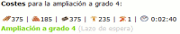
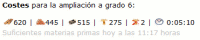
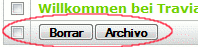
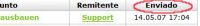
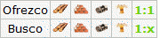
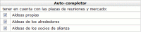
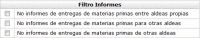
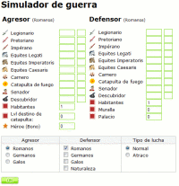

Travian Plus y Oro
| Características de Travian Plus | |
| Lazo de espera para construcciones | |
|  | El lazo de espera te permite dar órdenes a tus constructores para edificar o extender un segundo edificio. 60 segundos después de completar su tarea inicial, llevaran a cabo el segundo trabajo. |
| Pre-calculación de recursos | |
|  | Si no tienes suficientes recursos para edificar o extender un edificio, se te dirá el día y hora exacta cuando tendrás suficientes recursos. |
| Mayor mapa | |
 | Puedes tener un mapa mayor para tener una mejor visión de tus alrededores. En lugar de las normales 7x7 casillas, podrás ver 13x13 casillas. Aquellas alianzas que son aliadas o tienen pactos de no agresión (PNA) contigo serán mostradas en diferentes colores en el mapa. |
| Función de archivar informes y mensajes | |
|  | Los mMensajes e informes importantes pueden ser archivados para poder encontrarlos y conservarlos más fácilmente. También puedes elegir varios mensajes o informes y archivarlos o borrarlos a la vez. |
| Función de ordenar informes y mensajes | |
|  | Haciendo clic en "enviado" en el título de la tabla puede invertir la clasificación de informes y de mensajes. Si usted recibe muchos mensajes al día y necesita leer alguno más viejo puede hacer eso rápidamente con esta función. Puede también ser utilizada en los archivos. |
| Función de clasificar para el mercado | |
|  | Para usar el mercado más eficazmente, puedes filtrar las ofertas por materias primas. Adicionalmente puede filtrar para ver sólo ofertas de 1:1. |
| Auto-completar | |
|  | Usando Auto-completar puedes fácilmente "escribir" el nombre de una aldea usando pocos caracteres. Dependiendo de tus preferencias puedes usar esta función en cualquier combinación de tus aldeas, aldeas de miembros aliados o aldeas de tus alrededores. |
| Filtro de Informes | |
|  | Gracias al filtro de informes, informes no deseados de transacciones del mercado son un problema del pasado. Dependiendo de tus preferencias personales puedes fácilmente eliminar informes concernientes a intercambios con otras aldeas o entre tus propias aldeas. |
| Simulador de combate ampliado | |
|  | Puedes incluir el nivel de tus tropas o las de tus enemigos tanto en ataque como en defensa que son incrementadas en la armería y herrería. Adicionalmente, puedes también añadir el nivel del palacio, muralla/empalizada/terraplén y población de las cuentas afectadas. |
| Hipervínculos directos que puedes definir libremente | |
 | Gracias a estos hipervínculos, puedes llegar directamente a cualquier página que quieres con un solo clic. Simplemente crea hipervínculos a cualquier destino que quieras y llega directamente a la pagina de tu alianza, a tus barracas o a las tentadoras ofertas 1:1 en el mercado. |
| Estadísticas gráficas | |
 | Estas estadísticas te muestran el desarrollo cronológico de tu cuenta, por ejemplo el ranking, la fuerza de tu ejército o el desarrollo de tu población. |
| Vista general de la cuenta | |
 | Cualquiera que gobierna sobre varias aldeas puede fácilmente perder algo que esta aconteciendo en su dominio: ¿Donde están esas tropas que entrené? ¿Están todos mis constructores en la labor o tengo algunos vagueando? ¿Pierdo recursos por que mis almacenes no son suficientemente grandes? Simplemente mira tu vista general de la cuenta y puedes ver todas tus aldeas en un vistazo. |
| Bloc de Notas | |
 | No siempre tienes papel y lápiz a mano. Para asegurarte de no olvidar cosas importantes o si sólo quieres apuntar algo, usa el bloc de notas. |
| Características de Travian Gold | |
| Bono de producción de madera | |
 | Empleando oro en esta opción incrementarás toda la producción de madera en todas tus aldeas un 25%. El bono no será añadido a un solo campo de materias primas, sino a la producción total. |
| Bono de producción de barro | |
 | Empleando oro en esta opción incrementarás toda la producción de barro en todas tus aldeas un 25%. El bono no será añadido a un solo campo de materias primas, sino a la producción total. |
| Bono de producción de hierro | |
 | Empleando oro en esta opción incrementarás toda la producción de hierro en todas tus aldeas un 25%. El bono no será añadido a un solo campo de materias primas, sino a la producción total. |
| Bono de producción de cereal | |
 | Empleando oro en esta opción incrementarás toda la producción de cereal en todas tus aldeas un 25%. El bono no será añadido a un solo campo de materias primas, sino a la producción total. |
| Bono de ataque | |
 | Incrementa el valor de ataque de tus tropas en un 10%. |
| Bono de defensa | |
 | Incrementa el valor de defensa de tus tropas en un 10% incluso si las envías a defender otras aldeas fuera de tu reino. |
| Completar órdenes de construcción e investigación inmediatamente. | |
 | En la aldea en la que nos encontramos; todas las órdenes de construcción, investigaciones en la academia, armería y herrería, serán completadas inmediatamente. Sin embargo esto no afecta a Palacio, Residencia y aldeas de Maravilla. |
| Comercio NPC | |
 | Mediante el comercio NPC se intercambiará cualquier cantidad deseada de recursos en una aldea por cualquier otro recurso en relación de 1:1. |
Buscar
Configuración del FAQ